Demographic Forecasting
Lecture 2: Direct extrapolation
by time-series methods
March 5, 2024
Course overview
- Lecture 1: direct extrapolation by (generalized) linear models
- Lecture 2: direct extrapolation by time-series methods
- Lecture 3: parametric approaches
- Lecture 4: Lee-Carter method
Time-series analysis: intro
- A time-series is a collection of observations made sequentially through time. Let us focus on discrete time series recorded at equal intervals of time
- Suppose we have an observed time series \(y_1, y_2, \dots, y_T\) and we wish to forecast future values such as \(y_{T+h}\). The integer \(h\) is called forecasting horizon, and we denote by \(\hat{y}_{T+h}\) the forecast made at time \(T\) for \(h\) steps ahead
- Forecasting methods may be broadly identified into three types:
- Judgemental forecasts : based on subjective judgement and intuition
- Univariate methods : forecasts depend on present and past values of a single series
- Multivariate methods : forecasts depend, at least partly, on values of one or more additional variables (predictors)
\(\Rightarrow\) here univariate time-series methods
Descriptive techniques
- In order to forecast, description and modelling of data is a prerequisite
- Always start from plotting your data!
- This can help to identify two main sources of variation in many time series: i) trend, and ii) seasonal variation
- These variations are typically removed before time-series modelling via differencing \(\Rightarrow\) helps to stabilize the mean
- The time plot may also help to decide whether a variable needs to be transformed \(\Rightarrow\) helps to stabilize the variance (e.g. log-transformation)
Stationary stochastic processes
- A stochastic time series is one where future values can only partly be determined by past values
- A process is defined stationary_ if its properties do not change through time
- More formally, let \(y_t\) be the realization of the underlying random variable \(Y_t\), and the observed time-series \(\boldsymbol{y}=\left[y_1, y_2, \dots, y_T \right]\) be a realization of the stochastic process
- A stochastic process is second-order stationary if its first and second moments are finite and do not change over time, i.e.:
for all \(t\) and for \(k=0,1,2,\dots\) (note, for \(k=0\), \(\gamma_0 = \sigma^2\))
- In simpler words, a stationary series has constant mean, constant variance and no predictable patterns in the long-term
The ACF
- The set of coefficients \(\gamma_k\) constitutes the autocovariance function, which is standardized to give the the autocorrelation function (ACF) \(\; \rho_k = \gamma_k / \gamma_0\)
- The sample autocovariance coefficient at lag \(k\) is given by
\[ c_k = \sum_{t=1}^{T-k} \left(y_t - \bar{y}\right) \left(y_{t+k} - \bar{y}\right) / T \] for \(k=0,1,2,\dots\), - The sample autocorrelation coefficient at lag \(k\) is computed as \(r_k=c_k/c_0\)
- \(r_k\) is an estimate of the theoretical \(\rho_k\)
The correlogram & partial ACF
- The correlogram is the graph of \(r_k\) against \(k\)
- Plotting the correlogram is very useful:
- the ACF of non-stationary data decreases slowly, with \(r_1\) often large and positive (see example in next slide)
- the ACF of stationary data drops to zero relatively quickly
- useful to identify orders of AR(\(p\)) and MA(\(q\)) models
- The partial ACF (PACF) measures the excess correlation at lag \(k\) which has not already been accounted for by autocorrelations at lower lags
Non-stationary TS: an example
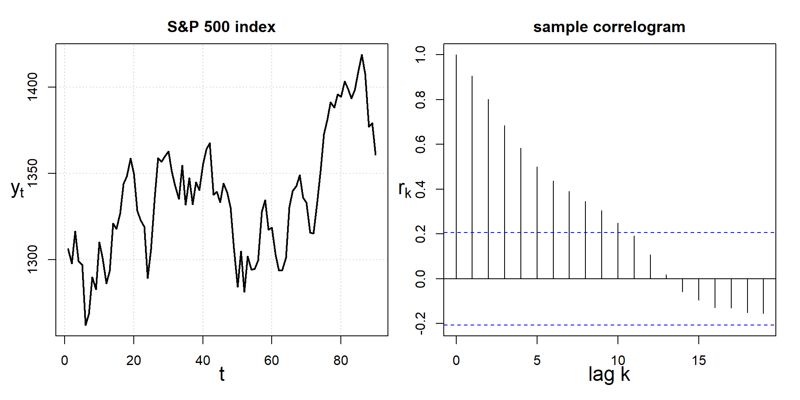Note: i) non-contant mean, and ii) sample correlogram decreases slowly, with \(r_1\) large and positive (Source: S&P data for 90 trading days from March 16, 1999, Chatfield (2000))
Differencing
- Powerful tool to stabilize the mean and obtain stationary time-series
- First-order differencing: \(y'_t=y_t-y_{t-1}\), \(y'_t\) is the change between observations of \(y_t\) (composed by \(T-1\) values)
- If \(y'_t\) still non-stationary, second-order differencing: \(y''_t=y'_t-y'_{t-1}=y_t-2y_{t-1}+y_t-2\) (composed by \(T-2\) values)
- Almost never necessary to go beyond \(y''_t\)
- For seasonal data, seasonal differencing: \(y'_t=y_t-y_{t-m}\), where \(m\) is the number of seasons, \(y'_t\) is the change between one year to the next
- In addition to correlogram, two main tests for determining the required order of differencing:
- Augmented Dickey Fuller test: \(H_0\) data are non-stationary and non-seasonal
- Kwiatkowski-Phillips-Schmidt-Shin (KPSS) test : \(H_0\) data are stationary and non-seasonal
Differencing in practice
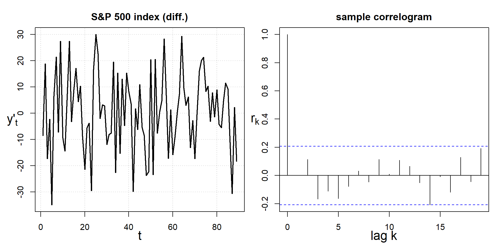Note: i) approx. constant mean and variance, no predictable patterns; ii) ACF drops to zero quickly, tiny value of KPSS test-statistics (cannot reject \(H_0\)) \(\, \Rightarrow\) stationary time-series
Purely random process (white noise)
- A sequence of uncorrelated, identically distributed random variables \(Z_t\) with zero mean and constant variance \(\sigma^2_z\)
- A stationary process with ACF equal to: \[ \rho_k = \left\{ \begin{array}{cc} 1 &k = 0 \\ 0 &k\neq0 \end{array} \right. \]
- Often used to model the random disturbances in more complicated processes
Purely random process: an example
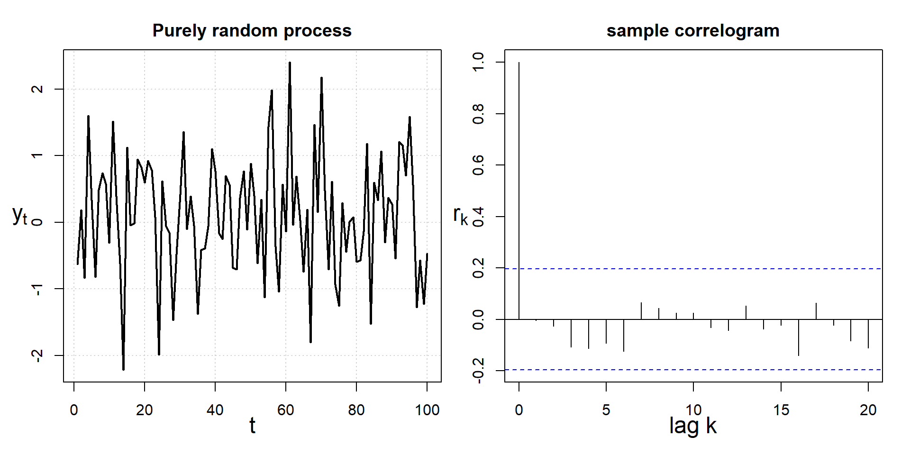Simulated time series of purely random process (note how it mimicks the differenced TS and correlogram of S&P)
Random walk model
- Random walk models are widely used for non-stationary data (e.g.~economic and financial data):
\[ Y_t = Y_{t-1} + Z_t \]
where \(Z_t\) is a purely random process
Random walk is non-stationary (variance increases through time), but first-order differences (purely random process) is stationary
Typical features:
- sudden and unpredictable changes of direction
- long periods of apparent trends up/down
Forecasts for the random walk model are simply given by the value of the last observation (i.e.~naïve forecast): \(\, \hat{y}_{T+h|T} = y_T\)
Random walk process: an example
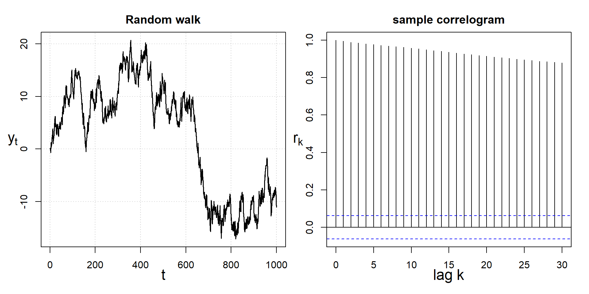Simulated time-series of a random walk process. Note the non-constant mean and the ACF slowly decreasing (indicating non-stationarity)
Random walk with drift model
A closely related model that allows first differences to have non-zero mean is the random walk with drift (RWD): \[ Y_t = c + Y_{t-1} + Z_t \] where \(Z_t\) is a purely random process, and \(c\) is a constant. If \(c>0\) (\(c<0\)), \(y_t\) will tend to drift upwards (downwards)
The estimate of the drift \(c\) is given by the average of the changes between consecutive observations: \[ c= \frac{1}{T-1}\sum_{t=2}^{T}\left(y_t - y_{t-1}\right) = \frac{y_T - y_1}{T-1} \]
Forecasts for the random walk model with drift are given by \(\,\hat{y}_{T+h|T} = y_T + c\,h\) \(\, \Rightarrow\) equivalent to drawing a line between the first and last observations, and extrapolating it into the future
RWD process: an example
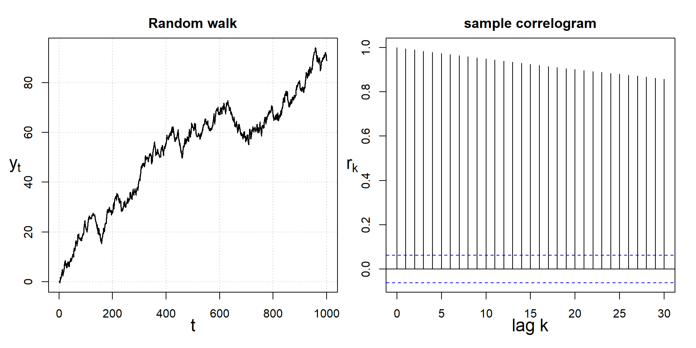Simulated time-series of a random walk process with drift. Note the non-constant mean and the ACF slowly decreasing (indicating non-stationarity)
Exercise
Exercise
Load the TimeSeries.Rdata data in R, and consider the first 200 trading days (i.e. the first 200 observations) from January 1st, 1990. Plot the data and correlogram, and decide whether the time series is stationary. Then (after possibly appropriate transformations) fit two models :
- a RW model (without drift)
- a RWD model
In both cases, plot forecasts for the next 50 trading days, and compare the two forecasts against the observed data.
Hints:
The correlogram is given by the
acffunction (automatically loaded inR)To fit the RW models, use the package
forecastand the function `Arima(y = .,order = c(0, 1, 0), include.drift = .) [we will shortly see that the RW model is an ARIMA(0,1,0) model]Use the command
forecast(object=., h=.)to produce forecasts
One possible solution
RW models
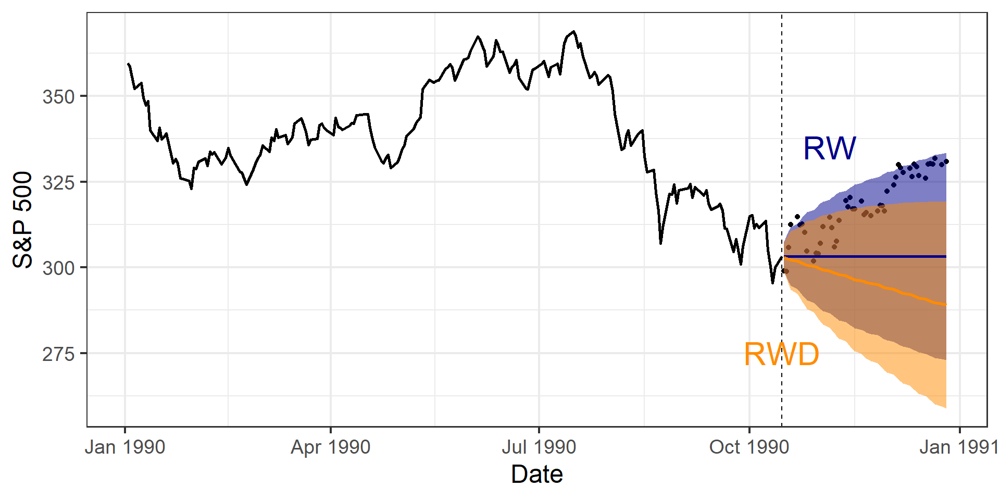Autoregressive processes
- A process \(Y_t\) is autoregressive of order \(p\) (denoted AR(\(p\))) if
\[ Y_t = c + \phi_1 Y_{t-1} + \phi_2 Y_{t-2} + \dots + \phi_p Y_{t-p} + Z_t\] where \(Z_t\) is a purely random process and \(c\) is a constant
- A multiple regression with lagged values of \(Y_t\) as predictors
- Simplest example: first-order case (AR(1)), where \(Y_t = c + \phi Y_{t-1} + Z_t\)
- if \(c=0\) and \(\phi=1\), then random walk
- if \(c\neq0\) and \(\phi=1\), then random walk with drift
- if \(|\phi|>1\), then the series is explosive and non-stationary
- if \(|\phi|<1\), then the process is stationary, with ACF given by \(\rho_k=\phi^k\) for \(k=0,1,2,\dots\) (\(\Rightarrow\) the ACF decreases exponentially)
- An useful property of an AR(\(p\)) process is that the partial ACF is zero at all lags greater than \(p\) \(\, \Rightarrow\) useful for model selection
AR(1) process: an example
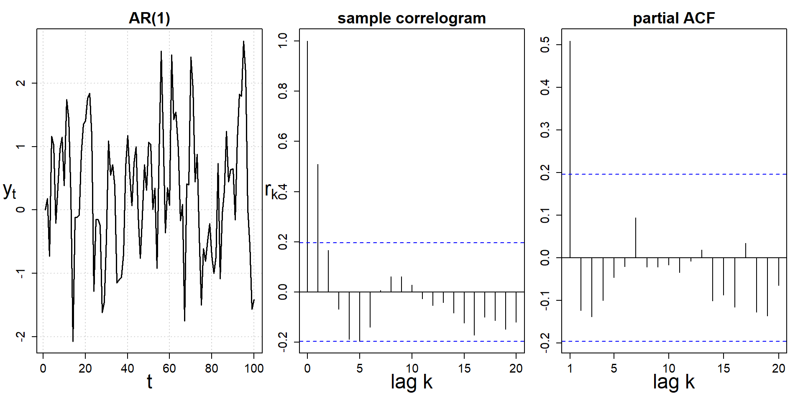Simulated time-series of an AR(1) process \(y_t=0.6y_{t-1}+z_t\). Note the ACF dies out in a sine-wave manner, PACF has all zero spikes beyond the 1st spike
Moving average processes
- A process \(Y_t\) is moving average of order \(q\) (denoted MA(\(q\))) if
\[ Y_t = c + Z_t + \theta_1 Z_{t-1} + \theta_2 Z_{t-2} + \dots + \theta_q Z_{t-q}\] where \(Z_t\) is a purely random process and \(c\) is a constant
A multiple regression with past errors as predictors; finite-order MA process is stationary for any values of \(\boldsymbol{\theta}\)
Simplest example: first-order case (MA(1)), where \(Y_t = Z_t + \theta Z_{t-1}\), is stationary \(\forall \theta\) with ACF given by: \[ \rho_k = \left\{ \begin{array}{cc} 1 &k = 0 \\ \theta / \left(1+\theta^2\right) &k = 1 \\ 0 &k>1 \end{array} \right. \]
An useful property of an MA(\(q\)) process is that the ACF is zero at all lags greater than \(q\) \(\, \Rightarrow\) useful for model selection
MA(1) process: an example
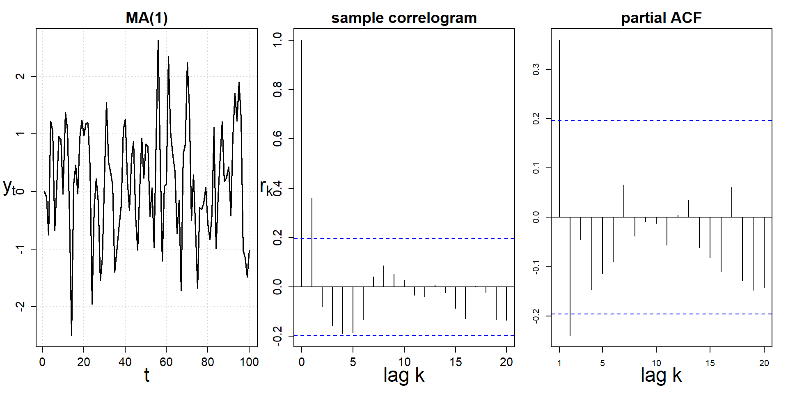Simulated time-series of an MA(1) process \(y_t=z_t+0.45z_{t-1}\). Note the ACF is zero at all lags greater than 1, while the PACF dies out in a sine-wave manner
ARMA & ARIMA processes
Putting together AR(\(p\)) and MA(\(q\)), a process \(Y_t\) is autoregressive moving average (denoted ARMA(\(p\),\(q\))) if \[ Y_t = c + \phi_1 Y_{t-1} + \dots + \phi_p Y_{t-p} + Z_t + \theta_1 Z_{t-1} + \dots + \theta_q Z_{t-q}\] where \(Z_t\) is a purely random process and \(c\) is a constant
- Moreover, most time-series are not stationary, and we cannot apply stationary AR, MA or ARMA processes \(\, \Rightarrow\) ARIMA(\(p,d,q\)) models combine ARMA with differencing of order \(d\), employed to make series stationary
- Autoregressive Integrated Moving Average (ARIMA(\(p,d,q\))) is a very general class of time-series models:
- purely random process: ARIMA(0,0,0)
- random walk: ARIMA(0,1,0) without constant
- random walk with drift: ARIMA(0,1,0) with constant
- AR(\(p\)): ARIMA(\(p\),0,0); MA(\(q\)): ARIMA(0,0,\(q\))
Modelling procedure with ARIMA
- Plot the data and identify unusual observations
- If necessary, transform the data to stabilize the variance
- If data non-stationary: take first-order differences until data are stationary
- Examine ACF/PACF: is an AR(\(p\)) or MA(\(q\)) model appropriate?
- Try chosen model(s) and employ AICc to search for a better one 6 Check residuals of the model \(\, \Rightarrow\) they should look like a purely random process
- Forecast
Interpreting the ACF/PACF can be very challenging, and not suitable for ARMA processes \(\Rightarrow\) points 3–5 with auto.arima function from forecast package
Exercise
Exercise
Now load the FERT.SWE.Rdata dataset, and consider again only data from 1950 onward for women aged 20. Fit and compare forecast up to 2050 of log-fertility rates using three approaches:
- a GLM for births with exposures as an offset (Day 1)
- a RWD model for log-fertility rates
- the most suitable ARIMA model (use the
auto.arimafunction) for log-fertility rates
One possible solution
TS vs GLM
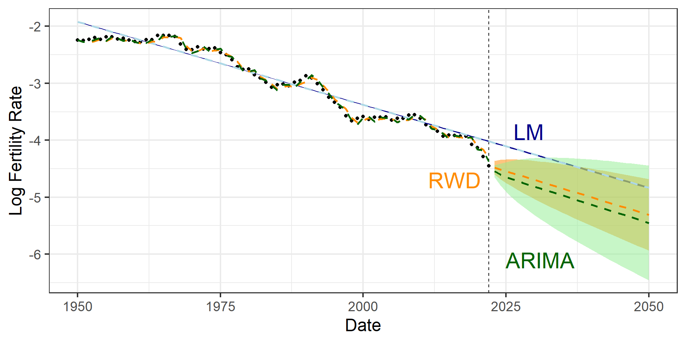Forecasting with time-series methods
Advantages:
- much better goodness-of-fit
- almost absent jump-off bias
- wider prediction intervals
What about summary measures? Can we try to incorporate uncertainty from \(m\) different models together?
ARIMA PIs
- The computation of ARIMA prediciton intervals is rather complex (and beyond the scope of this course)
- A simple example: if \(\hat{\sigma}\) is the standard deviation of the residuals, then for any ARIMA model, the 95% PI for the first point forecast is given by \(\hat{y}_{T+1|T} \pm 1.96\hat{\sigma}\)
- Advantage: in addition to theoretical PIs, we can simulate future paths of the time-series based on the estimated model
\(\Rightarrow\) we can combine simulations from the different models in a bootstrapping framework
Exercise
Exercise
Consider again the best ARIMA model for the log-fertility time series seen before. Compare the analytical PIs derived earlier with those we could obtain from simulating future paths of the time series. Repeat this exercise for different number of simulations. When do the PIs between the two approaches get more similar?
Hint: use the function simulate(object=., nsim=.,future=TRUE, bootstrap=TRUE) to produce future paths of your estimated model
One possible solution
ARIMA simulations
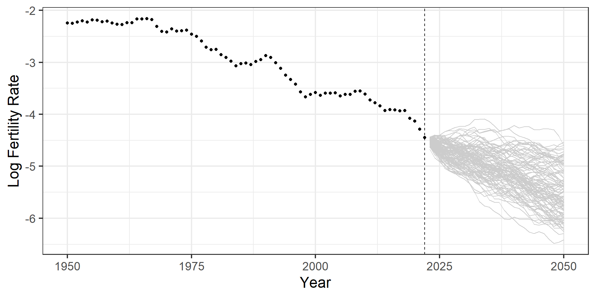ARIMA PIs
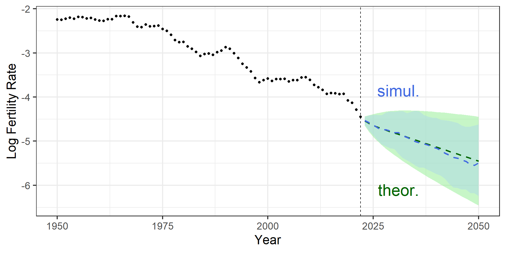Summary measures
Combining simulations from \(m\) different models…
ARIMA TFR with 80% PI
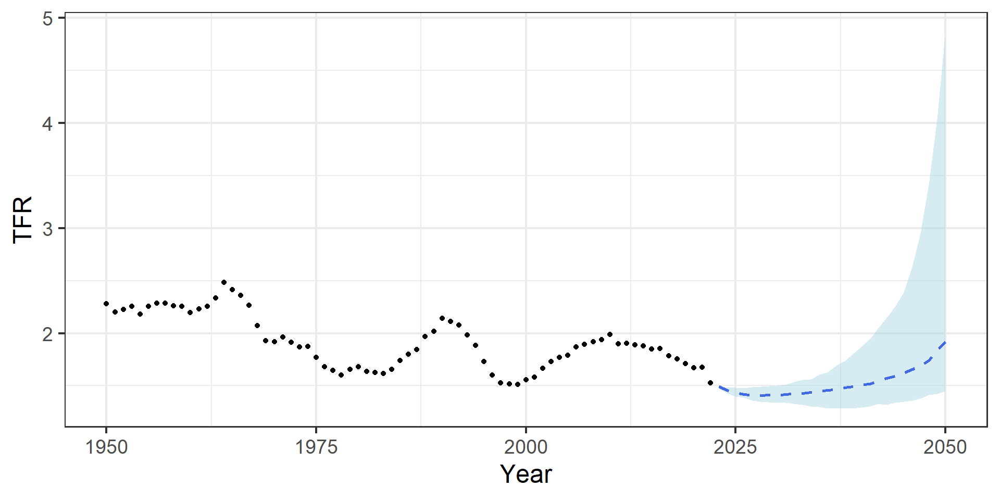Age-specific fertility pattern
What about the age-specific shape of fertility?
ARIMA age-pattern
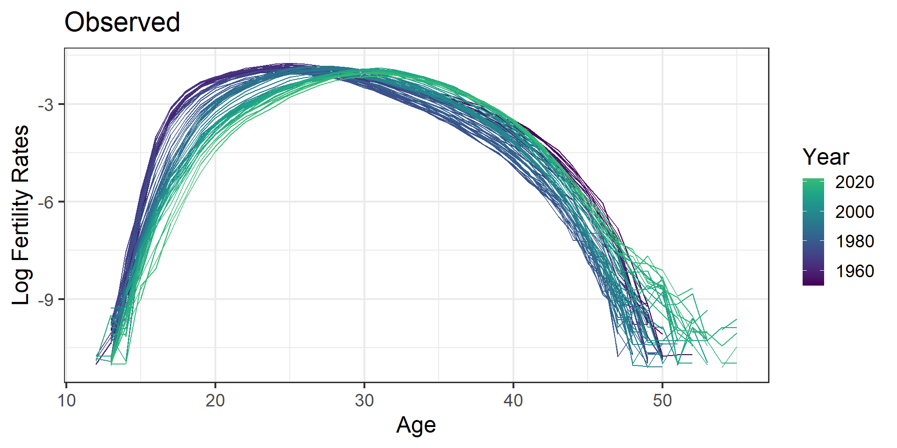ARIMA age-pattern
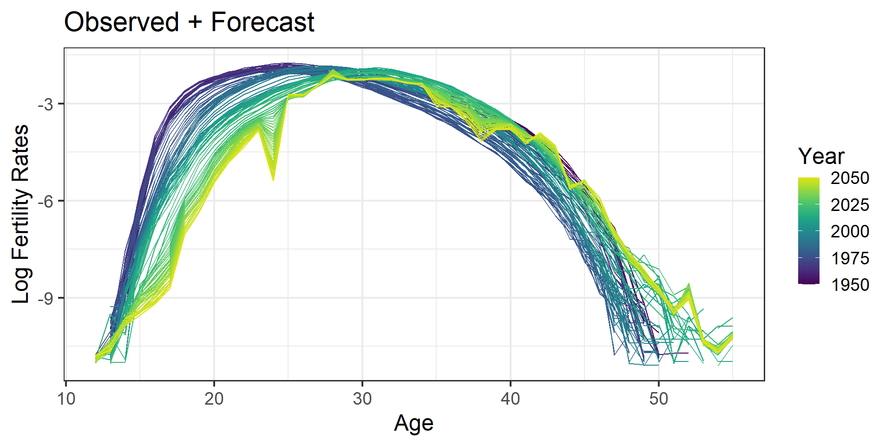Forecasting with time-series methods
Advantages:
- much better goodness-of-fit
- almost absent jump-off bias
- larger prediction intervals
Disadvantages:
- strange wiggling behaviour over ages
- too large prediction intervals?
Day 2 assignment
Assignment
- Load the mortality data
MORTSWE.Rdata, and focus on mortality from 1950 to 2000 for males aged 20 years. Fit and forecast mortality up to 2022 using two separate models:
- a random walk with drift model for log-rates
- the best possible ARIMA model for log-rates
Plot the forecast rates against the subsequently observed data in 2001-2022. Which model seems to forecast mortality better?
Load the mortality data
MORTSWE.Rdata, and focus on male mortality from 1950 onwards for those aged 0-100 (i.e. exclude the 101-110+ age groups). Fit and forecast mortality up to 2050 using the best possible ARIMA model for log-rates for all age groups available (aforloop is a convenient way to do so). Compare the observed age-pattern of mortality against the forecast one. Does it seem like a reasonable pattern of mortality? [Hint: you will need to replace minus infinite values of \(\ln (m_{x,t})\) withNAfor some age groups]Following up on Exercise 4, compute simulations for the future paths of all \(\ln (m_{x,t})\), and combine them together to compute a forecast of life expectancy. Use the provided function
LifetableMX.Rto construct a life table from your (log) rates. [Hint: you will need to create an array, rather than a matrix, where to store your simulations of \(\ln (m_{x,t})\)]

European Doctoral School of Demography 2023/2024 \(\cdot\) INED, Aubervilliers